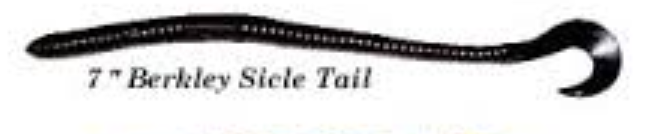
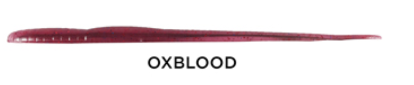

Name |
Image |
Price |
Description |
| 10" Berkley Power Worm |  |
45 ¢ / worm | With its wide range of uses and subtle natural action, the Berkley Power Worm has quickly become a favorite with anglers all over the world. The beauty of the Power Worm is in it's simplicity. The Berkley Power Worm may just look like a thick round plastic worm but the fall rate created from the large amount of salt impregnated in the body drives fish mad. When rigged weightless the Berkley Power Worm falls horizontally with a seductive side to side tail action. Try wacky rigging or texas rigging the Berkley Power Worm and experience the versatility and effectiveness it provides. |
| 7" Berkly Sicle Tail Worm |  | 35 ¢ / worm | Building upon this outstanding line of soft plastics, the 7" Berkly Sicle Tail Worm delivers a unique and appetizing action that bass cannot resist. Built with a specially designed spade tail, the 7" Berkly Sicle Tail Worm moves a great deal of water and comes-to-life on a darter head, neko-rig, and wacky-rig. Available in a number of fish-catching colors, the 7" Berkly Sicle Tail Worm delivers a one-of-a-kind presentation that is sure to give your "bank-roll" a boost. |
| 6" Berkley Power Worm |  |
25 ¢ / worm | Sometimes when you need to catch that kicker fish, you need a bigger bait for the job. Introducing the new 6" Berkley Power Worm. Its added length and long curly tail deliver an amazing action perfect for fishing ledges or anywhere else big fish live, while also providing the size to weed out the little ones. Poured to perfection, you can fish it on a Texas-rig, Carolina-rig or even weightless. Available in a variety of colors, the 6" Berkley Power Worm has what it takes to put the big ones in the boat. |
| 4" Berkley Finesse |  |
15 ¢ / worm | Enhanced with BANG Fish Attractant, the 4" Berkley Finesse Worm deliver the proven floating worm action that bass can’t resist - now with the added benefit of natural scent that draws fish in and makes them hold on longer. Texas-rig the Tapout Worms and skip them under docks and over hangs, fish them on a drop shot, wacky rig the, or even Carolina-rig them, the 4" Berkley Finesse Worm. |
| 6" Straight Worm |  | 25 ¢ / worm | The Straight Tail Worms have become a staple for finesse fishing, harkening back to the days of the 'hand poured' finesse worms so popular on the West Coast more than a decade ago. The Straight Tail Worms are surprisingly effective, especially during the warmer months when fish pressure and boat traffic are at their peak. Using state-of-the-art robotic technology to create consistent, well-defined colors every time. It also allows them to create unique color combinations, usually only found in 'hand poured' worms. The super soft plastic Strait Tail Worms end up having a very sensitive, alluring action complete with a Salt Release System that provides a burst of salt when a fish bites ' causing them to hold on longer for solid hooksets. |
| 2" Berkley Power Gulp Sandworm |  |
25 ¢ / worm | Ideal for a wide-range of applications, the Berkley Gulp 2” Sandworm delivers a look, taste, and action that appeals to all fish. Ingenious in its simplicity, the Berkley Gulp 2” Sandworm represents a wide-range of forage and is infused with Berkley’s universally effective GULP! scenting. Perfect for drop shots, Carolina-rigs, and small jig heads, the Berkley Gulp 2” Sandworm delivers a tried-and-true attraction that is sure to keep your lines tight, whether your are fishing in fresh or saltwater. |
| 6" Green Weenie |  |
25 ¢ / worm | The Straight Tail Worms have become a staple for finesse fishing, harkening back to the days of the 'hand poured' finesse worms so popular on the West Coast more than a decade ago. The Straight Tail Worms are surprisingly effective, especially during the warmer months when fish pressure and boat traffic are at their peak. Using state-of-the-art robotic technology to create consistent, well-defined colors every time. It also allows them to create unique color combinations, usually only found in 'hand poured' worms. The super soft plastic Strait Tail Worms end up having a very sensitive, alluring action complete with a Salt Release System that provides a burst of salt when a fish bites ' causing them to hold on longer for solid hooksets. |
| 6" Salt and Pepper Blue |  |
25 ¢ / worm | The Straight Tail Worms have become a staple for finesse fishing, harkening back to the days of the 'hand poured' finesse worms so popular on the West Coast more than a decade ago. The Straight Tail Worms are surprisingly effective, especially during the warmer months when fish pressure and boat traffic are at their peak. Using state-of-the-art robotic technology to create consistent, well-defined colors every time. It also allows them to create unique color combinations, usually only found in 'hand poured' worms. The super soft plastic Strait Tail Worms end up having a very sensitive, alluring action complete with a Salt Release System that provides a burst of salt when a fish bites ' causing them to hold on longer for solid hooksets. |
| 6" Red & Green Flake Weenie w/ Chartreuse Tail |  |
25 ¢ / worm | The Straight Tail Worms have become a staple for finesse fishing, harkening back to the days of the 'hand poured' finesse worms so popular on the West Coast more than a decade ago. The Straight Tail Worms are surprisingly effective, especially during the warmer months when fish pressure and boat traffic are at their peak. Using state-of-the-art robotic technology to create consistent, well-defined colors every time. It also allows them to create unique color combinations, usually only found in 'hand poured' worms. The super soft plastic Strait Tail Worms end up having a very sensitive, alluring action complete with a Salt Release System that provides a burst of salt when a fish bites ' causing them to hold on longer for solid hooksets. |
| 6" Salt & Pepper Purple |  |
25 ¢ / worm | The Straight Tail Worms have become a staple for finesse fishing, harkening back to the days of the 'hand poured' finesse worms so popular on the West Coast more than a decade ago. The Straight Tail Worms are surprisingly effective, especially during the warmer months when fish pressure and boat traffic are at their peak. Using state-of-the-art robotic technology to create consistent, well-defined colors every time. It also allows them to create unique color combinations, usually only found in 'hand poured' worms. The super soft plastic Strait Tail Worms end up having a very sensitive, alluring action complete with a Salt Release System that provides a burst of salt when a fish bites ' causing them to hold on longer for solid hooksets. |